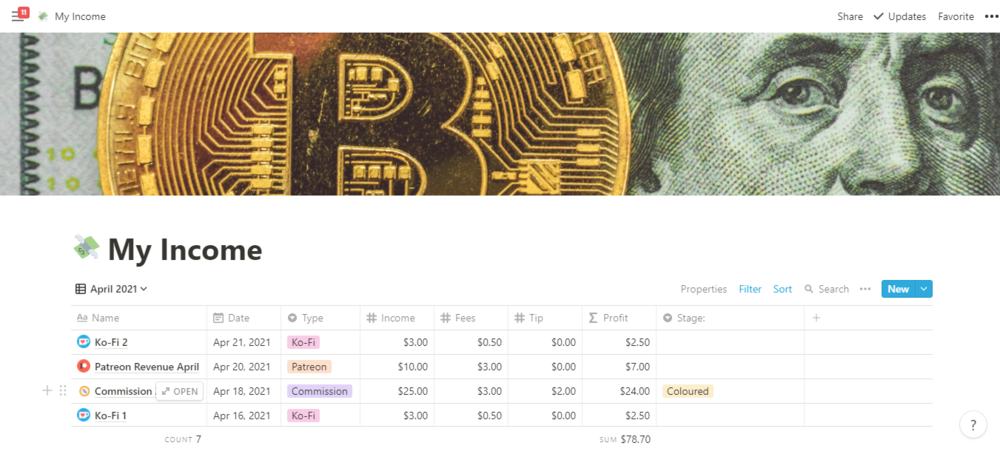
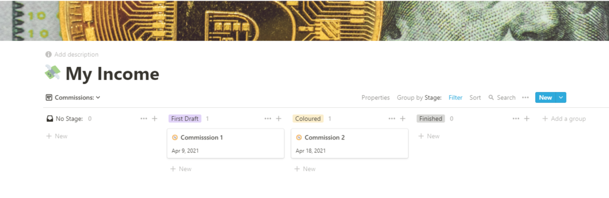
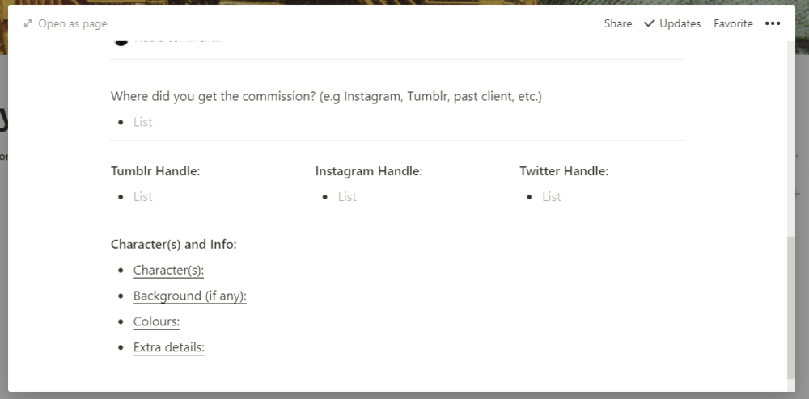

How I manage my finances as a freelancer
Apr 24 '21 • Written by Yassen Shopov
📖 5 minute read
When we get over the initial honeymoon of the freelance career, the first dollars are banked in and/or spent on a nice pair of shoes, there comes a good checkpoint to stop and zoom out on your finances. Many people go for Excel when they need to manage finances, I’ve certainly been among them tbh. And while Microsoft Excel remains an authority in the productive workspaces, the app Notion could be such a blessing with its sleek design and relatively easy-to-use interface. To save you from the hassle, if you download the app, I’ve provided a link to my own ‘Financial Planner’ template for digital artists, which you can just copy and paste for you to use and make your life so much easier. I put a small 1$ price for the template just because I believe it will solve a lot of your problems and help you become much more aware of your income, and I think this peace of mind deserves a price tag, albeit small. You can find the link at the bottom of the page if you wish to skip ahead.
In this article, I will dissect (sounds scary) the system I use to manage my income from the different business income flows. I stand on this hill that it’s terribly important to diversify your income, as if you rely on just one paycheck to keep you afloat, you basically have all your fiscal eggs in one basket. I’m still in the baby steps phase of this diversification myself, but know for a certain that I’ll feel much more financially safe if I have more than one income stream, even if the separate ones aren’t equal in size or frequency.
Below, you can see the front view of the template:
As you can see, it takes the form of a table, with some of my main incomes of April 2021. This is dummy data of course, and the numbers will look different for you. Still, I included the following as possible types of income you could add as a digital artist:
Commissions (for me it’s the main source of income)
Ko-Fi (for me this is my tips, you can see how it looks here)
Patreon
YouTube (still not doing this, will begin at some point in the future)
Merch (for me this is my income from RedBubble, which you can find here)
Once you get my template, you can delete my rows of data and insert them by yourself, relative to your own income. If you look at the top left corner, you’ll find that it says ‘April 2021’ in the view section. If you click on it, you’ll find that I made different ‘views’ for each month of the year. This helps you zoom out and actually see how much you’re making each month. And as you see, there are different columns for income, fees, tips, which when all added, will automatically calculate the end profit for you. Extremely useful when you file taxes or just to get a bird’ eye view of your income. There is also a view that reflects the whole income for 2021.
Now, the next ‘view’ is useful in a sense different than the financial one. You’ll notice that if you do commissions, you often do it in stages, and I made a view to reflect that:
Here you can move a commission from one stage to the other with just a single drag-and-drop. It is an easy way to keep track of your projects, since you will probably have numerous of those. Gotta stay on top of stuff!
And finally, when you start adding data, just click ‘+New’ and you will be offered a range of templates (Commission Template, Ko-Fi template, etc). When you choose one, you’ll see that it is arranged in such a way that it is easy as hell to add the necessary info, as with the commission template over here:
If you think this template would make your life easier, and I’m sure it will, go here to install the Notion app, and click the link below to buy the 1$ template 🌸
www.kofiscrib.com/notion/p/financial-template